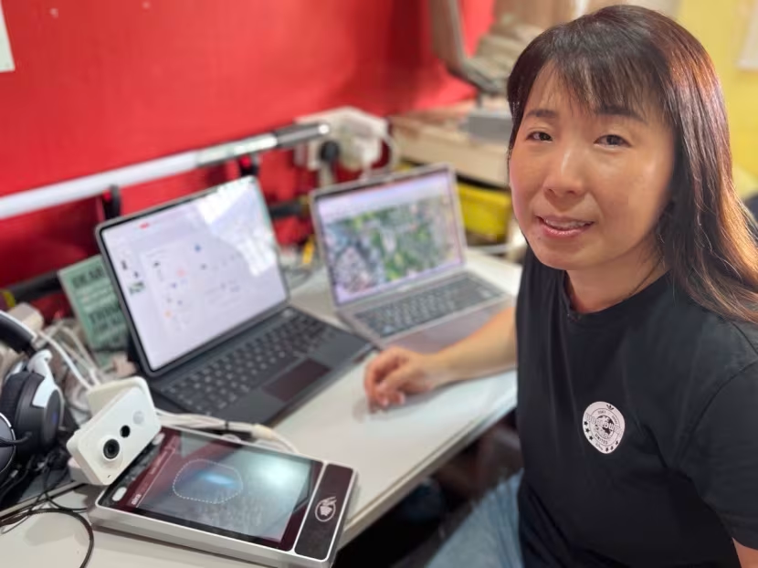
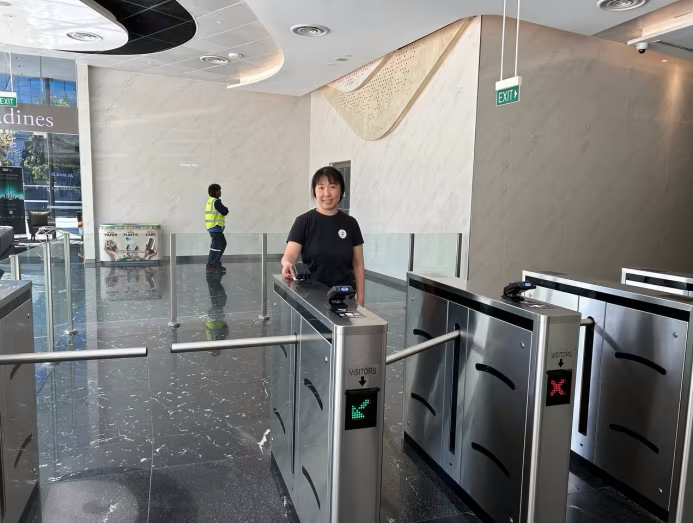
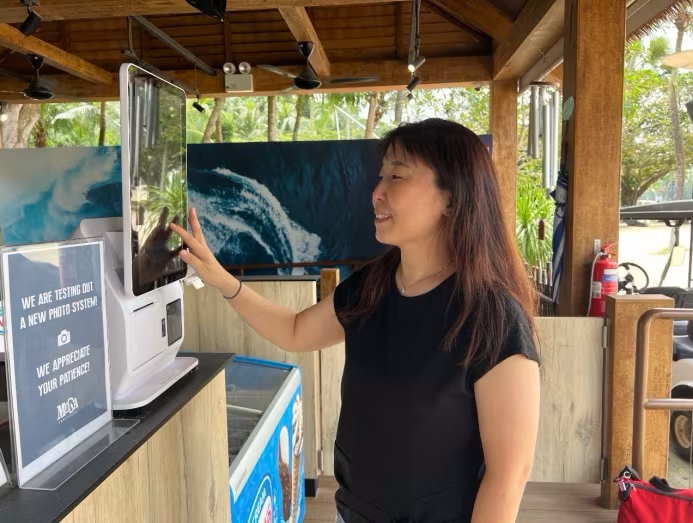

From assembling her own CPU in the 90s to developing police cameras for HDB blocks, Khoo Ri Na of Evvo Labs tells CNA Women how her love for gadgets and her knack for problem-solving led her to develop tech solutions for national security and healthcare.

As chief solutions officer at Evvo Labs, Khoo Ri Na is familiar with hardware such as sensors,
trackers, CCTVs and IoT across different brands, as well as software and technology trends.
You may not have seen Khoo Ri Na, but you have probably come across her work. The 48-year tech expert was part of the initial team that the Singapore Police Force (SPF) engaged to develop police cameras (PolCams) for 10,000 Housing Development Board (HDB) blocks across Singapore – her work was instrumental in helping the police solve crime.
She was also part of the team that worked with a healthcare provider to create a system documenting the screening of lorry drivers and travellers coming through Singapore’s land checkpoints for their COVID-19 vaccination history at the beginning of the pandemic.
Khoo’s latest project is also healthcare-related: She is building a location monitoring device that can be inserted into the footwear of persons with dementia to keep them safe.
Her tech solutions address key security and healthcare concerns. Khoo however, was not formally trained in tech. In fact, she majored in business and marketing in university, and started her career in a marketing and communications role at a security solutions company.
FROM NOOB TO TECH EXPERT
A Gen-Xer, Khoo grew up in the 80s and 90s when modern-day technology was in a very nascent stage. Smartphones were hardly heard of then.
In those days, listening to music meant lugging around a Walkman, or later, a CD player or MD player. Taking good photos meant investing in a DSLR camera.
Khoo loved these gadgets. “I have always appreciated how technology can improve quality and productivity,” she said.
Her love for technology even led her to assemble her own central processing unit (CPU) for her computer 30 years ago, when she was in her teens.
Because YouTube had yet to be invented then, and there were no how-to videos, Khoo hung out at Sim Lim Square, the go-to place for electronic and computer parts, to learn how to put a CPU together from store owners and friends.
“At the time, if you wanted a certain computing power, you had to either build the CPU yourself or pay a lot for it.
“So I bought parts such as the processor, RAM (random access memory) and a transparent enclosure (case) because I wanted to see the parts and lights when using it, and built my own CPU,” she laughed, adding that she continued assembling, modifying and upgrading her CPU for many years.
“My dad was a metalworks manufacturer and as a child, I helped him on the manufacturing
floor. Growing up, I was not told that there is anything girls cannot do,” said Khoo.
After graduating from university, Khoo joined security solutions provider Certis CISCO in a marketing and communications role. As part of her job, she created user manuals and sales catalogues for security equipment.
Over time, she got to know the products very well, and when the opportunity came along to move to product development within the company, she did.
“I worked with equipment manufacturers on products related to surveillance and access control, modifying the product features for certain-use cases, or modifying the size, shape and physical specifications such as the colour and design to blend into the installation locations,”

In this project, Khoo created a visitor registration system for a client, enabling
visitors to self-register at a kiosk and get a QR code printout for access into the premises.
It was also at Certis CISCO where she worked on SPF’s first iteration of their police cameras – PolCams 1.0 – in 2012.
Her project covered 10,000 HDB blocks around Singapore, with around four to six cameras per block. The PolCams have since been expanded to other areas in Singapore and have helped to solve around 7,500 crimes islandwide.
“We worked with police officers to ensure that the product is easy to use and intuitive. We also ensure that the cameras were robust enough for outdoor use at void decks where they will be exposed to some rain and opportunities for vandalism,” she said.
“We worked with police officers to ensure that the product is easy to use and intuitive. We also ensure that the cameras were robust enough for outdoor use at void decks where they will be exposed to some rain and opportunities for vandalism,” she said.
“The lights in our HDB blocks come on at 7am and turn off at 7pm. But the sun does not rise and set like clockwork so there will be times when the void deck is very dark. It is important to have surveillance coverage during these times as well,” she said.
TECH SOLUTIONS TO EVERYDAY PROBLEMS
After 16 years with Certis CISCO, Khoo left to start her own tech company Stak Apps, which she still runs. In 2021, technology company Evvo Labs invited her to join them to build their IoT portfolio, and she agreed.
Both companies integrate the most suitable hardware and software to provide tech solutions to their clients while working to boost cybersecurity.
Both companies integrate the most suitable hardware and software to provide tech solutions to their clients while working to boost cybersecurity.
Each project typically takes six to eight weeks. One of Evvo Labs’ most recent clients was Mega Adventure in Sentosa, which runs Mega Zip, a 450-metre zipline across the Imbiah Hill jungle canopy, Siloso Beach and the sea.
Khoo is creating a system that enables riders to select and purchase photos taken during the ride via a self-help service.

Khoo is currently creating a system for Mega Zip at Sentosa that enables riders to select
and purchase photos taken during the ride via a self-help service.
Another current project close to her heart is a wearable location monitoring device that can be attached to the shoes of persons with dementia. She has wanted to work on a project like this since her uncle, who has dementia, got lost three years back.
“After this happened, we got him a pendant, but we realised that he would sometimes walk out without it.
“We then Apple Air-Tagged his shoes. But I realised that this only works with a dedicated phone. If the person with the phone is not around, or if the sensor runs out of battery, we would not be able to find him.
“If the person with dementia is living alone, this cannot work too,” she said.
Khoo is addressing these issues by creating a device with a longer battery life, and one that is easy to charge and can be accessed via multiple mobile phones or a monitoring service provider.
Khoo and her team intend to work with dementia community helplines and support groups so that even those with dementia who are living alone can receive help should they lose their way.
“We chose for it to be inserted in footwear after studying the behaviour of persons with dementia, who are mostly elderly. We realised that most elderly people don’t really have many shoes, usually just two to three.
“They are not like teenagers who have 16 to 20 pairs. So we think this is a good non-intrusive way to monitor the location of persons with dementia,” said the mother-of-three, whose children are aged 20, 18 and 13.
“We chose for it to be inserted in footwear after studying the behaviour of persons with dementia, who are mostly elderly.”
Rather than searching for the dementia patient only after family members discover he or she is missing, Khoo is designing her solution to be more proactive.
“Based on our analysis, we’d be able to map out the usual places each person goes at a specific time, especially if the person with dementia already has a very set routine. If they wander off their usual path, we can prompt their family members to check on this person,” she explained.
The product is currently in its prototype phase, and Khoo hopes to launch it by mid-2025.
Khoo added that the power to create such solutions is the reason she loves tech.
“In many ways, technology is the future,” said Khoo. Pausing, she added: “It is not just the future, it is the now. You cannot ignore technology.”
Technology and cybersecurity knowledge is not just essential for digital transformation, but also for everyday work and life, she said.
“For example, many people don’t know that anything that is connected to the internet is hackable. This includes your phone, laptop, iPad, door access and even the CCTV you put in your living room or bedroom,” she said.
As a tech and cybersecurity expert, what is one security tip she has for everyday consumers?
“When buying a product off the shelf, the baseline is to always change your user ID and password [from the default settings]. Otherwise, your system can be easily accessed and this is a major invasion of privacy,” she said.